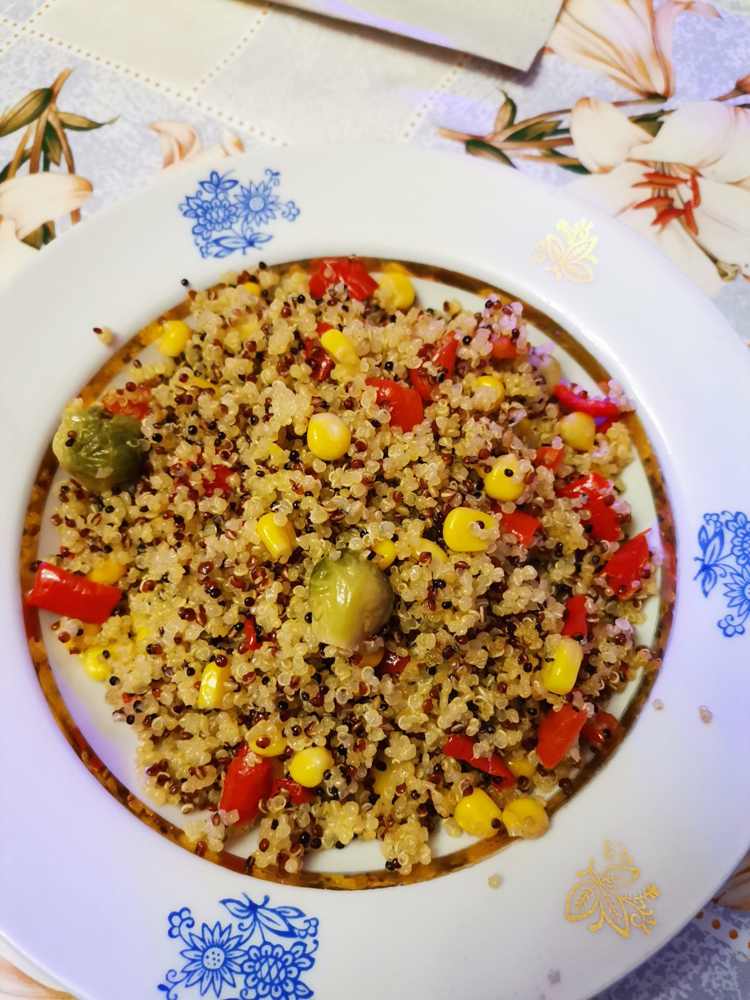

Pizza

Discription
Ingredients
- For the dough for 2 medium pizzas:
- 600 g wheat flour
- 400 ml kefir 2.5%
- 8 art. l. sunflower oil
- 1 tsp salt
- 1 tsp Sahara
- 1 tsp baking powder
- For tomato sauce:
- 400 g pelati tomatoes
- 2 tbsp. l. sunflower oil
- 1 garlic clove
- ½ tsp dry basil
- salt and pepper to taste
- For filling:
- 15-20 cherry tomatoes
- 10 champignons
- 100 g hard cheese Tenero Basil from COMO
Steps
Knead the pizza dough. Pour 500 g of flour into a bowl, pour in 400 ml of kefir 2.5% and 8 tbsp. l. sunflower oil, add 1 tsp. l. salt, 1 tsp. sugar and 1 tsp. baking powder. Knead a stiff and plastic dough. You can use a kitchen machine with a hook attachment for kneading. Leave the dough on the table for 20 minutes, covered with a towel so that it does not become weathered. It should "rest".
Prepare tomato sauce. To do this, mash the pelati tomatoes with a fork until a smooth puree. Use a blender if you like. Add squeezed cloves to them, ½ tsp. dry basil, 2 tbsp. l. sunflower oil, salt and pepper to taste. Mix thoroughly to disperse the spices throughout the sauce.
Prepare the filling. Take 15-20 cherry tomatoes, cut in half, and cut 10 champignons into arbitrary pieces. We made slides.
Turn on the oven to heat up to 220 degrees.
Divide the dough into two parts and roll each into a thin layer 2-3 mm thick. Form the sides with your hands. Transfer pizza to a baking sheet lined with parchment paper. Spread well with tomato sauce and spread the champignon and cherry tomato filling. Sprinkle the pizza with coarsely grated Tenero Basil hard cheese from COMO.
Place the baking sheet in an oven preheated to 220 degrees for 10-12 minutes in the top and bottom heating mode. The sides should turn golden.